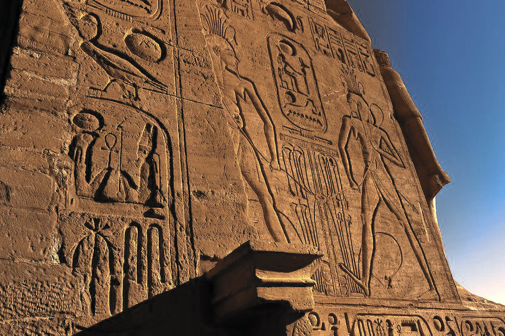

About hieroglyphs
The Egyptian hieroglyphic script was one of the writing systems used by ancient Egyptians to represent their language. Because of their pictorial elegance, Herodotus and other important Greeks believed that Egyptian hieroglyphs were something sacred, so they referred to them as 'holy writing'. Thus, the word hieroglyph comes from the Greek hiero 'holy' and glypho 'writing'. In the ancient Egyptian language, hieroglyphs were called medu netjer, 'the gods' words' as it was believed that writing was an invention of the gods. The script was composed of three basic types of signs: logograms, representing words; phonograms, representing sounds; and determinatives, placed at the end of the word to help clarify its meaning. As a result, the number of signs used by the Egyptians was much higher compared to alphabetical systems, with over a thousand different hieroglyphs in use initially and later reduced to about 750 during the Middle Kingdom (2055-1650 BCE). In the 1820s CE, Frenchman Jean-François Champollion famously deciphered hieroglyphs using the 2nd century BCE Rosetta Stone with its triple text of Hieroglyphic, Demotic and Greek. Egyptian hieroglyphs are read either in columns from top to bottom or in rows from the right or from the left.
 Hieroglyphic signs are divided into four categories:
- Alphabetic signs represent a single sound. Unfortunately the Egyptians took most vowels for granted and did not represent such as ‘e’ or ‘v’. So we may never know how the words were formed.
- Syllabic signs represent a combination of two or three consonants.
- Word-signs are pictures of objects used as the words for those objects. they are followed by an upright stroke, to indicate that the word is complete in one sign.
- A determinative is a picture of an object which helps the reader. For example; if a word expressed an abstract idea, a picture of a roll of papyrus tied up and sealed was included to show that the meaning of the word could be expressed in writing although not pictorially.
There is a way for translating the modern alphabet to hieroglyphic signs. Below is a table of the letters with the corresponding symbols. Note that there are only 19 letters with symbols in this table. This is because the Egyptians only used consonants in their writings.
| Letter | Hieroglyph | Represents |
|---|---|---|
| A | 𓄿 |
Egyptian vulture |
| a | 𓂝 |
Arm |
| B | 𓃀 |
Foot |
| D | 𓂧 |
Hand |
| F | 𓆑 |
Horned viper |
| G | 𓎼 |
Jar |
| H | 𓎛 |
Wick |
| h | 𓉔 |
Courtyard |
| J | 𓇋 |
Reed leaf |
| K | 𓎡 |
Basket with handle |
| M | 𓅓 |
Owl |
| N | 𓈖 |
Water |
| P | 𓂸 |
Stool |
| Q | 𓈎 |
Hill |
| R | 𓂋 |
Mouth |
| S | 𓈙 |
Pool |
| s | 𓋴 |
Folded linen |
| T | 𓏏 |
Loaf of bread |
| W | 𓅱 |
Chick |
| X | 𓐍 |
Sieve |
| x | 𓄡 |
Abdomen |
| Y | 𓇋 |
Reed leaf |
| Z | 𓊃 |
Door bolt |